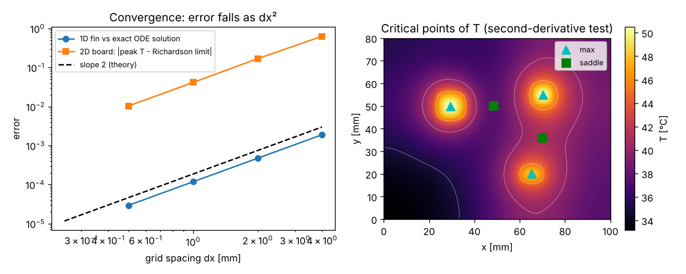
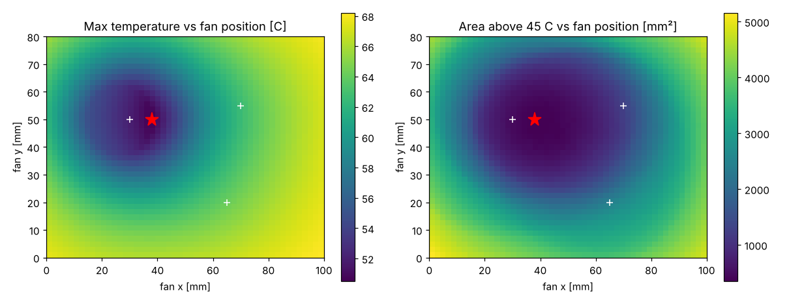
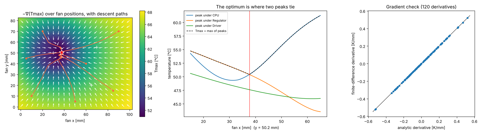
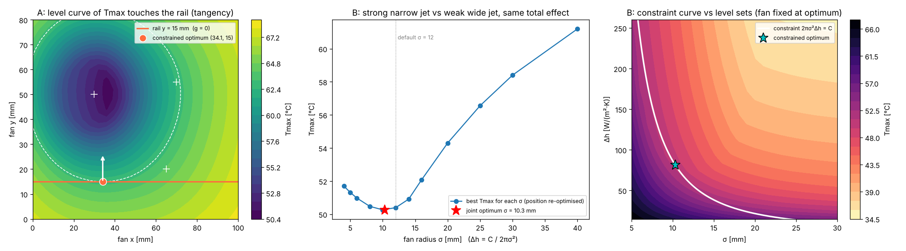
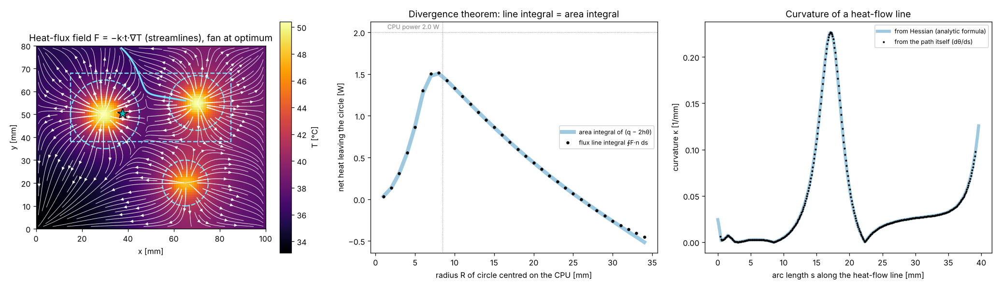
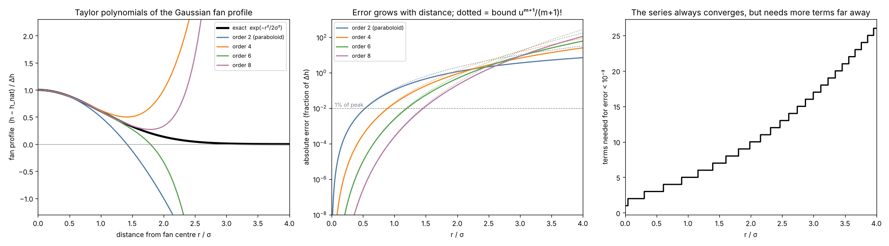

What the calculus shows
Every number below was produced by the Python scripts in the downloads, and is checked against an exact or independent result wherever one exists.
1. Validation of the solver
| Check | Result |
|---|---|
| Five-point stencil on a smooth function, $h=0.2\dots0.025$ | error ratios 3.97, 3.99, 4.00 (theory: 4) |
| 1D fin with exact cosh solution, $\varepsilon=4,2,1,0.5$ mm | relative errors $1.9\times10^{-3}\to3.0\times10^{-5}$, observed order 2.00 |
| 2D peak temperature, $\varepsilon=4\dots0.25$ mm | observed order 1.87, 2.03, 2.00; Richardson limit 50.568 °C |
| Uniform source and uniform $h$ (exact $T=T_a+q/2h$) | maximum error $2.4\times10^{-12}$ |
| Energy balance, three fan positions | relative error $\le10^{-13}$ |
| Adjoint gradient against central differences | worst relative error $1.6\times10^{-7}$ |

At the lab's 2 mm grid there are only four to six cells across a chip, so the peak temperature carries a discretisation error of order 0.2 °C. That does not change which fan position is best.
2. Temperature field, fan scan and critical points
Without a fan the maximum is 69.0 °C at the CPU. Scanning 2091 fan positions (2 mm steps):
| Case | Fan (x, y) mm | Tmax (°C) | Area > 45 °C (mm²) |
|---|---|---|---|
| No fan | – | 69.04 | 6060 |
| Best for Tmax | (38, 50) | 50.50 | 352 |
| Best for area > 45 °C | (38, 48) | 50.65 | 348 |
| Worst | (100, 0) | 68.21 | 4808 |

With the fan at (38, 50) mm the field has three maxima and two saddles (second-derivative test, $D=T_{xx}T_{yy}-T_{xy}^2$):
| Location (mm) | T (°C) | Txx | D | Type |
|---|---|---|---|---|
| (29.5, 50.0) | 50.5 | −0.229 | +0.0521 | maximum (CPU) |
| (70.2, 54.9) | 50.4 | −0.315 | +0.0956 | maximum (regulator) |
| (65.3, 20.0) | 48.0 | −0.188 | +0.0673 | maximum (driver) |
| (69.9, 36.1) | 41.1 | −0.025 | −0.0011 | saddle (regulator–driver) |
| (48.5, 50.1) | 37.7 | +0.061 | −0.0005 | saddle (CPU–regulator) |
3. The optimum, by gradient descent and the KKT condition
Gradient descent from seven starting points converges to the same place, about $(37.7,\,50.25)$ mm, with $T_{\max}\approx50.40$ °C, matching the scan. There the CPU and regulator peaks are 50.414 and 50.385 °C (the driver is at 47.60 °C). The gradients of the two tied peaks are $(+0.3077,+0.0252)$ and $(-0.2175,-0.0191)$ K/mm, an angle of 179.7° apart, and
$$0.414\,\nabla f_{\rm CPU}+0.586\,\nabla f_{\rm reg}=(+0.00006,\,-0.00076)\ \text{K/mm},$$which is zero to the accuracy of the tie tolerance. Along a line through the optimum the CPU peak alone is lowest (about 49.3 °C) with the fan almost on the CPU, but then the regulator is the hottest part: the optimum gives up about 1.1 °C on the CPU to help the regulator.

4. Constrained problems
Rail $y=15$ mm. The best position on the rail is $x=34.09$ mm with $T_{\max}=62.88$ °C, 12.5 °C worse than the free optimum. The multiplier is $\lambda=-0.2814$ K/mm. Re-optimising with the rail at 14 mm and 16 mm gives $dT^*_{\max}/dc=-0.2816$ K/mm, in agreement to 0.1%.
Fixed airflow budget $C=2\pi\sigma^2\Delta h=0.0543$ W/K (the default fan), with the position re-optimised for each radius:
| σ (mm) | Δh (W/m²K) | best fan (x, y) mm | Tmax (°C) |
|---|---|---|---|
| 4 | 540 | (39.6, 51.1) | 51.71 |
| 6 | 240 | (40.6, 51.0) | 50.98 |
| 8 | 135 | (40.7, 50.8) | 50.48 |
| 10 | 86.4 | (39.7, 50.6) | 50.27 |
| 12 (default) | 60 | (37.7, 50.2) | 50.40 |
| 16 | 33.8 | (31.9, 50.3) | 52.09 |
| 20 | 21.6 | (32.7, 50.4) | 54.30 |
| 30 | 9.6 | (34.3, 49.4) | 58.40 |
| 40 | 5.4 | (36.1, 49.0) | 61.20 |
The joint optimum is the fan at (39.45, 50.53) mm with $\sigma=10.3$ mm and $\Delta h=81.5$ W/(m²K), where $T_{\max}=50.264$ °C. The multiplier from the $\sigma$-component is $-106.89$ K per (W/K) and from the $\Delta h$-component $-107.00$; the elasticity condition reads $-11.605$ K against $-11.618$ K. The radius optimisation improves on the default fan by only 0.14 °C, so the robust finding is the shape of the trade-off: wide, weak fans lose steeply and very narrow jets lose gently. The shadow price from re-optimising with the budget changed by ±2% is $-102.7$ K per (W/K), within 4% of $\lambda$, limited by the optimiser's tie tolerance.

5. Heat flux, Green's and the Divergence theorem
The flux $\mathbf F=-kt\nabla T$ is a gradient field, hence conservative (zero curl). Its divergence is $q-2h\theta$, so for any loop
$$\oint_C\mathbf F\cdot\mathbf n\,ds=\iint_D(q-2h\theta)\,dA.$$The left side uses only $\nabla T$ on the loop; the right side uses only chip power and cooling inside. They are computed independently:
| Loop | Line integral (W) | Area integral (W) |
|---|---|---|
| Circle R = 15 mm around the CPU | +0.8615 | +0.8618 |
| Circle R = 12 mm around the regulator | +0.7862 | +0.7863 |
| Circle R = 10 mm around the driver | +0.6776 | +0.6777 |
| Circle R = 6 mm in the cooled gap (no chip) | −0.0571 | −0.0569 |
| Circle R = 6 mm at the saddle point | −0.1424 | −0.1427 |
| Rectangle 15 ≤ x ≤ 85, 38 ≤ y ≤ 68 mm | +1.0196 | +1.0204 |
All six agree to within 0.1%. Negative values mean the fan removes more heat inside the loop than the loop generates, so heat flows in. For the 60 °C isotherm without a fan, the arc length is 54.18 mm and Green's theorem gives an enclosed area of 232.8 mm² against 235.0 mm² from counting cells (1%); the isoperimetric ratio $P^2/4\pi A=1.004$ says the hot region is almost circular. A heat-flow line from (65, 56) mm is 39.6 mm long with peak curvature $\kappa=0.227$ mm⁻¹; the Hessian formula $\kappa=|(I-\tau\tau^T)H\tau|/|\nabla T|$ and the turning rate of the computed path agree to 0.5%. The line is planar, so its torsion is zero.

6. Taylor series of the fan profile (live)
Write the fan as $e^{-u}$, $u=r^2/2\sigma^2$. The degree-$m$ Taylor polynomial in $u$ is $P_m(u)=\sum_{k=0}^m(-u)^k/k!$ with error at most $u^{m+1}/(m+1)!$ (alternating series). Since $u\propto r^2$, degree $m$ in $u$ is order $2m$ in $r$. The lowest model, $m=1$ (order 2 in $r$), is the paraboloid $h\approx h_{\rm nat}+\Delta h(1-r^2/2\sigma^2)$. It vanishes at $r=\sqrt2\,\sigma$, and its polar integral over that support is $\pi\sigma^2\Delta h$, exactly half of the Gaussian's $2\pi\sigma^2\Delta h$. Move the sliders:
Using each polynomial only where it is within 2% and zero beyond (high-degree polynomials grow without bound far away), the full board solution gives:
| Fan model | Valid out to | Fan effect captured | Tmax (°C) |
|---|---|---|---|
| Order 2 in r (paraboloid) | 0.64 σ | 18.6% | 61.20 |
| Order 4 in r | 1.01 σ | 40.5% | 55.76 |
| Order 6 in r | 1.32 σ | 57.6% | 53.20 |
| Order 8 in r | 1.57 σ | 71.4% | 52.21 |
| Exact Gaussian | all r | 100% | 50.40 |
| No fan | – | 0% | 69.04 |
The series needs 5 terms for accuracy $10^{-3}$ at $r=\sigma$, 10 at $2\sigma$, 17 at $3\sigma$ and 26 at $4\sigma$. A local polynomial model cannot represent a fan whose influence extends over several radii; the lab's "Fan profile" menu lets you see this directly. Used only where accurate, the paraboloid recovers 42% of the exact fan's cooling (the 18.6% column is the share of the fan's total convection it carries). On its full support $r\le\sqrt2\sigma$ it carries exactly half.

Assumptions and limits
- Chip powers and positions, conductivity, convection coefficients and the Gaussian fan profile are assumed for illustration. A real fan produces a directional flow pattern.
- The model is steady state and two-dimensional, with one effective conductivity instead of a layered stack-up, insulated edges, constant $h_{\rm nat}$ and no radiation. Zhang and Chen include layered conduction, vias, Joule heating and temperature-dependent boundaries; none of that is modelled here.
- No experimental validation was performed. The checks show the equations are solved correctly, not that the model matches a physical board.
- $T_{\max}$ is not smooth where peaks tie; the optimiser handles that with the convex-hull treatment of the theory page.